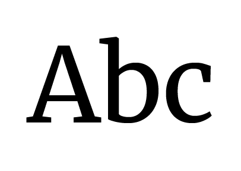
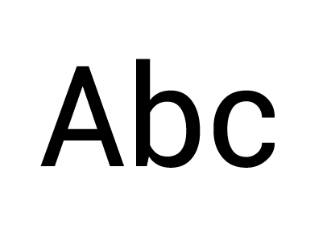

← Volver

Colores
Tipografías

Merriweather
En esta infografía fue usada en títulos. Fue diseñada para ser una cara de texto agradable de leer en las pantallas. Presenta una altura x muy grande, formas de letras ligeramente condensadas, un leve acento diagonal, serifas sólidas y formas abiertas.

Roboto
En esta infografía fue usada para párrafos. Tiene una naturaleza dual, un esqueleto mecánico y las formas son en gran parte geométricas. Al mismo tiempo, la fuente presenta curvas amigables y abiertas, permitiendo que las letras se asienten en su ancho natural. Esto genera un ritmo de lectura más natural que se encuentra más comúnmente en tipos humanistas y serif.